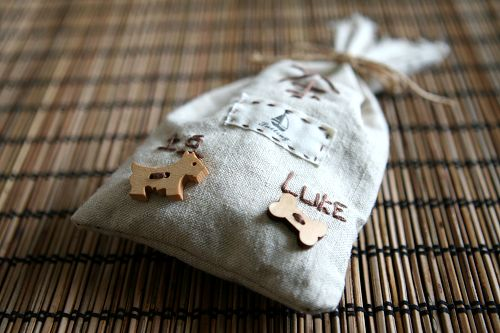
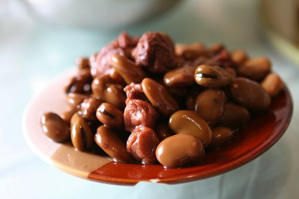
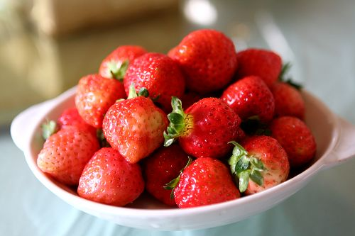
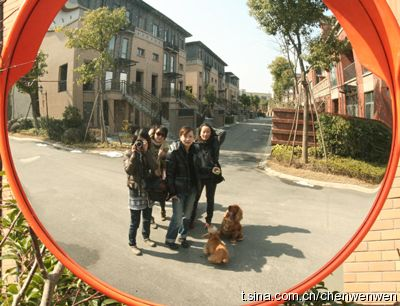
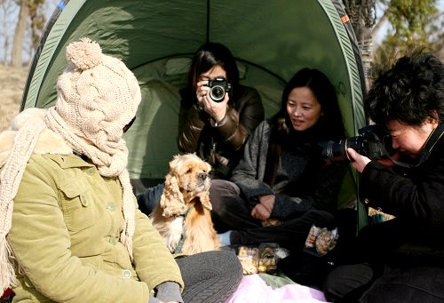
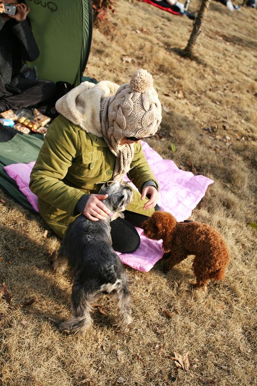

今年春节过得如此安逸。
初一初二大雪，家很温暖。隔三差五，亲朋相互走动聚聚，吃吃喝喝，幸福的本质应该就是这样简单，日子过得满足充实，网络在生活中也就不那么重要了，假期快结束这才补上旧闻。
年初二，小原子、问问和shuwua来偶家中相聚，电影和音乐只是背景，女人聊起来毫无时间感，天色渐黑，本人奉上小酒准备了几个菜，外面又飘起小情调的雪花，真好！
玩得开心，忘记拿相机了。只好用手机照补上记录。

小原子亲自烘焙的巧克力饼干和蛋糕，以及她送给我手工缝制的香包，上面绣着Luke和土豆，有爱又耐心。


初五和女伴们跑去汤山看房子吃农家菜，遗憾没去泡“汤”，实在可惜。这是俺第一次在汤山停留，话说这农家菜真是可口，排队等桌，过年价钱也涨了。现在看着这些菜真想再吃、吃、吃一顿啊~





这张用了问问拍的，5个人正好凑齐一个乐队咯。

阳光虽好，风即大又寒，一个帐篷塞不下5个人和4条狗。偶家运动健将在大草地上玩捡球运动，土豆和痴情男豆豆则整个下午上演女跑男追的情景剧。最有意思的是撑起来的帐篷居然收不回去。于是俺们就举着粗略折叠后的“小”帐篷上车了。

美丽“冻”人的小原子，在寒风+暖阳下摇身变成“女飞行员”唠。

怪大叔外外只爱一个人，只接受它爱的人爱它（有点绕啊）。其他人只能用眼神传递爱唠！

豆豆狗生中难忘的一天：追靓女“土豆”。

俺家两宠，一个粘人一个不出堂。后者毫无社交经验，不是冒失就是鸡动，淡定淡定~

5个人2部车，一整天的快乐。话说小原子一路狂飚，跟车的偶佩服她无所畏惧的精神（去汤山的高速上可是有探头的啊~）！一下车大家直奔山头扎帐篷，Luke路遇腊肠犬夫妇，好奇地奋力向前，拽着36斤的它可不是件轻松活儿。

女飞行员豆娘毫不留情地阻止豆豆刚刚萌生的爱情！

15 Responses to “吃吃喝喝的满足”
2010-02-19
我发现小原子的鼻子和嘴很性感嘛……
2010-02-19
性感=诱人……吧~
2010-02-19
看来我拿你相机拍的，你都不太满意哎。唉唉。。。
2010-02-19
主要是偶对自己不满意哎，咳咳咳~~~你相机里可有满意的PP啊？
2010-02-19
喜欢土豆的椅子，红烧老鹅里的“萝卜”，郊游的草坪以及飚车。。。
2010-02-19
哈哈哈~~怎么我在你们心目中成飚车女了，我啥意识也没有，只想着快，嘿嘿…..
除了菜就我上镜最多了。要谈性感也只剩下这2个器官了~~
2010-02-19
这盘鸡肉，看到的都是好肉哇。
2010-02-20
女人.帐篷和狗…新年好:)
2010-02-20
来温习一下你们的春游图~
哈哈，人手一宠~
2010-02-20
女飞行员轮廓太美老
四美女的衣服颜色（包括帐篷）和这野外的早春如此相得益彰～～好好看
2010-02-21
看来国内爱狗人士不少，老中在国外养狗的不多，主要是怕麻烦。国外养狗手续挺多。
2010-02-21
好想吃那个鸭大腿。口水流出来了。
2010-02-22
男狗、女狗们超可爱！
2010-02-23
我女儿也戴这样的帽子，超可爱的~~
2010-02-26
原来你和扑土他们是一伙的…
早就看到你们的网站了…
哈哈…..
Leave A Reply
存档只读，评论已关闭。